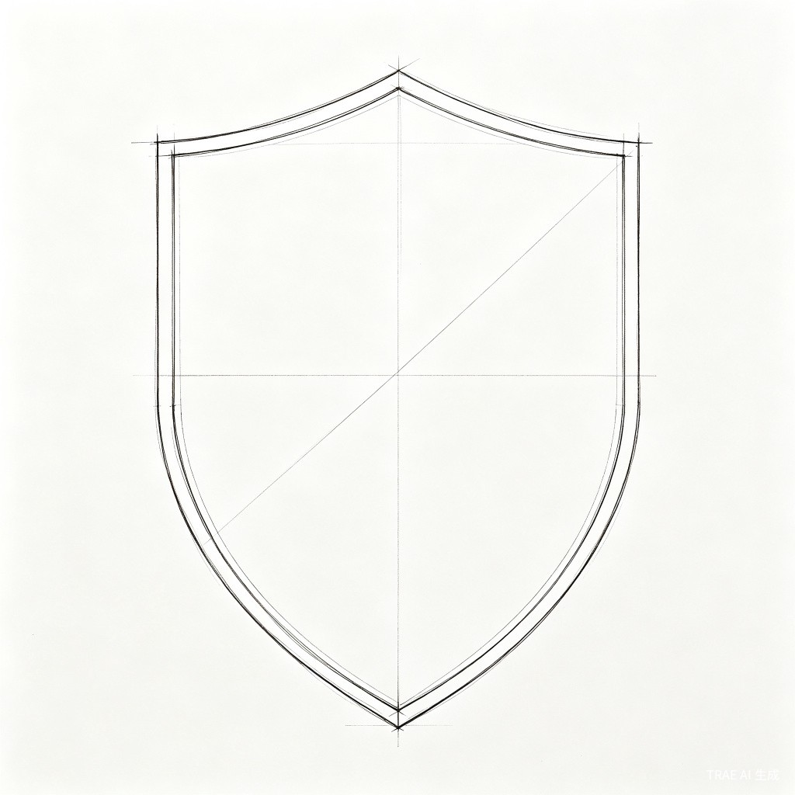

这不是你的错觉，是 2026 年正在发生的事。
AI 能替你干活，但替你活不了。
数据来源：2026 职场变革报告 / 《2026 年轻人疲劳报告》
继续你有没有觉得，在这个AI唾手可得的时代，我们好像越来越"轻"了？
这种"轻"，是因为我们习惯了把感知、判断和决策，统统外包给外面的世界。
想象一下，当你的手机只剩1%的电量，或者突然断网，那种瞬间涌上来的焦虑到底是什么？其实，你怕的不是失联，你怕的是失去了那块替你感知世界的屏幕。
第一步，是让你重新学会"在场"。当AI离线，拔掉插头，去用你自己的皮肤感受风的温度，用你自己的眼睛观察街道的纹理。别急着找信号，先找回那个脱离设备后，依然鲜活、敏锐的自己。
放下手机，用 30 秒认真感受一下你此刻的呼吸和脚下的温度。
坚持 7 天，你会重新建立"不依赖屏幕也能感知世界"的信心。
夺回在场感，你会发现真实世界比信息流更丰富。
继续
当你重新感知到真实，你就会发现：原来你的大脑，不需要安装别人的操作系统。
在真实的世界里，我们依然容易被另一种东西绑架——那就是外界的声音。老板一句轻描淡写的打压（PUA），社交媒体上贩卖的焦虑，甚至是AI给出的看似完美的"标准答案"，都在试图接管你的价值判断。
我们要做的，是帮你建起一道"认知防火墙"。把判断是非的权利，重新收回到自己手里。
下次听到让你自我怀疑的声音，先问自己一句：这是事实，还是别人的评判？
坚持 7 天，你会形成"先过滤再吸收"的思维本能。
守住判断的边界，你既能听取建议，又不会丢失自我。
继续很多人害怕被AI替代，是因为他们一直把自己放在"执行者"的位置上，满足于AI给出的那60分的平庸答案。
当你的内核足够稳定，AI就不再是你的替代者，而是你最得力的助手。你定方向、做判断；AI负责落地、执行。
下次用 AI 之前，先写下：我要的方向是什么？我要保留哪部分属于我的判断？
坚持 7 天，你会形成"先定方向再用工具"的决策习惯。
夺回主宰权，你既能善用 AI 的效率，又不会丢失自我。
开始自测：我的主体性流失了多少每天 5 分钟，从觉醒到习惯。
不是打卡任务，而是与自己的对话。每天 5 分钟，重建你的决策主体性。
设置 3 个随机闹钟，响铃时停下手中事，用 1 分钟感受"脚踩地面的触感、呼吸的节奏、周围 3 种声音"。
遇到情绪波动时暂停 10 秒，用"我感到______（情绪词），因为______（事实）"句式记录，禁止使用评判性语言。
当天接收 3 条外部信息时，先问"这条信息是否经过我的价值筛选？"记录你过滤了什么、为什么保留或拒绝。
收到他人评价时，写下"对方说的原话"，标注"这是事实还是评判？"最后问自己"这个评价是否影响我对自己的核心认知？"
做一个微小决策时，先手写"我的真实需求是什么？"再参考外部建议，对比差异，记录最终选择和原因。
完成一项创作/工作时，先用 10 分钟手写"我最想表达的核心是什么？"再使用工具辅助，标注哪些部分必须坚持自己的表达。
回顾前 6 天的觉察记录，用"我可以接受______，但绝不放弃对______的判断权"句式，写下 3 条属于自己的主体性原则。
觉醒已经开始，接下来是行动。
主体性三支柱 —— 在场・守界・主宰，帮你把人生方向盘重新握回自己手里。
真正的强大，不是拥有多少工具，
而是永远做自己人生的决策者。
"坚持 7 天练习，现在用 AI 只做执行，重要选择不再盲从。"
"不再因为别人评价否定自己，终于有了自己的判断标准。"
"以前遇到问题就搜 AI，现在先想 10 分钟再用工具，效率反而更高了。"
收藏本页面，每天打开完成 5 分钟练习。